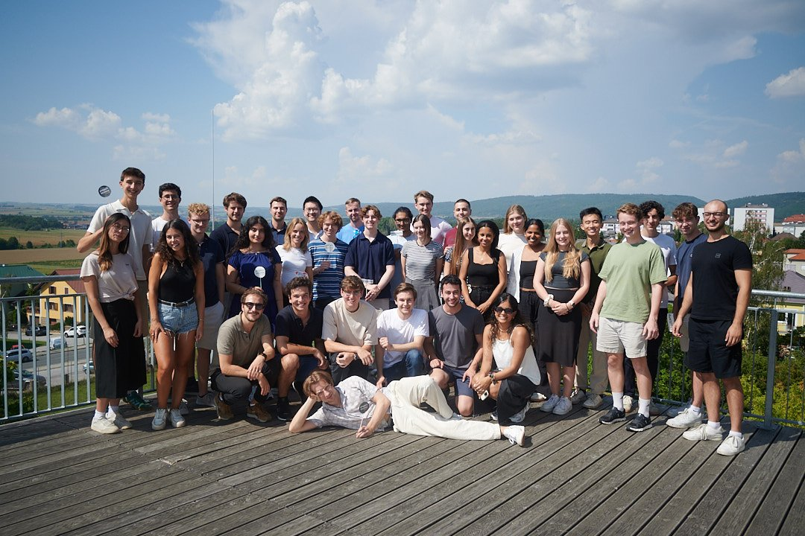
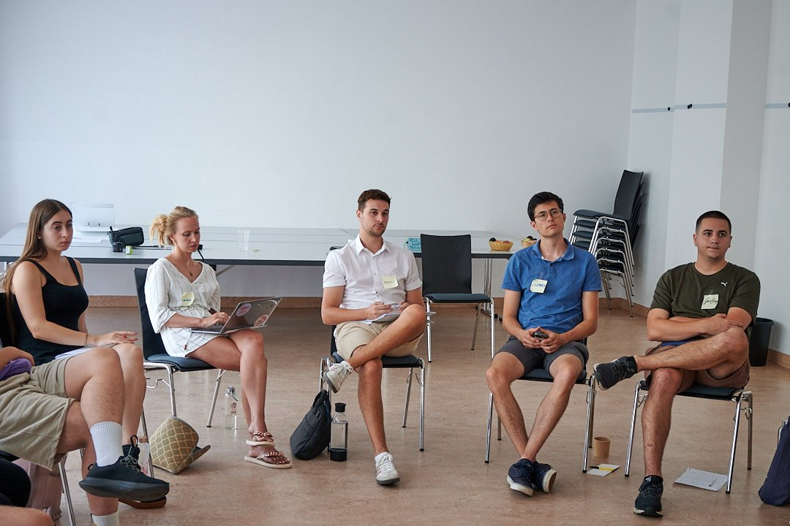

Muss ich schon wissen, wo ich mich bewerben will?
Nein. Das Bootcamp hilft auch bei Orientierung und Studienwahl.
Bootcamp 2026
Rund 40 Schüler:innen und Studierende aus Österreich und Südtirol arbeiten an ihren Bewerbungen — mit Admissions Officers, Studierenden und Alumni internationaler Universitäten. Kostenlos.

Worum es geht
Vier Tage in kleinen Gruppen: Studienwahl, Essay, Interview und Finanzierung. Ein fertiger Bewerbungsplan ist nicht nötig — das Bootcamp hilft besonders, wenn du noch herausfindest, welche Universitäten passen und wie eine Bewerbung aufgebaut sein sollte.
Inhalte


Zielgruppe
Schüler:innen und Studierende aus Österreich oder Südtirol, die ein Bachelor-, Master- oder PhD-Studium an einer internationalen Universität in Erwägung ziehen. Vorrang für Bewerber:innen mit weniger Zugang zu privater Beratung, internationalen Schulnetzwerken oder familiärer Erfahrung mit Auslandsstudien.
FAQ
Nein. Das Bootcamp hilft auch bei Orientierung und Studienwahl.
Nein. Unterkunft und Verpflegung sind frei. Reisekosten unterstützen wir auf Anfrage.
Ja. Bachelor-, Master- und PhD-Interessierte sind willkommen.
Nein. Mentoring läuft über das internationale Project Access Programm und ist separat zum Bootcamp.
Nein. Das Bootcamp ist auf reguläre Studiengänge im Ausland ausgelegt, nicht auf Austausch.
So früh wie möglich. Plätze sind begrenzt und werden laufend vergeben.